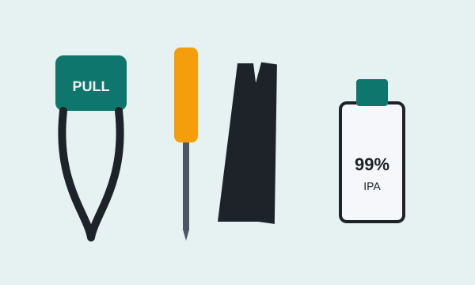

Choose a switch
Linear, tactile, or clicky? Compare popular switches by feel, force, and sound, then save your favorites for later.
Explore the switch guideKeyCraft Lab is a beginner-friendly workshop for anyone who wants to choose the right mechanical keyboard, keep it clean, and stop dust from slowly cooking their PC.
Find your switchLoading your visit history...
Linear, tactile, or clicky? Compare popular switches by feel, force, and sound, then save your favorites for later.
Explore the switch guide
Step-by-step guides for a quick keyboard wipe-down, a full deep clean, and a safe PC dust-out.
Read the maintenance guides
Finished a keyboard or cleaned an old PC? Tell us about it or request a guide on a topic we have not covered yet.
Share a buildLoading a tip...
Dust, crumbs, and skin oils build up faster than most people think. On a keyboard, debris under the keycaps can make keys feel scratchy, register twice, or stop working. Inside a PC, dust clogs fans and heatsinks, which raises temperatures and makes the fans spin louder. A few minutes of regular care keeps your gear quieter, cooler, and working longer.